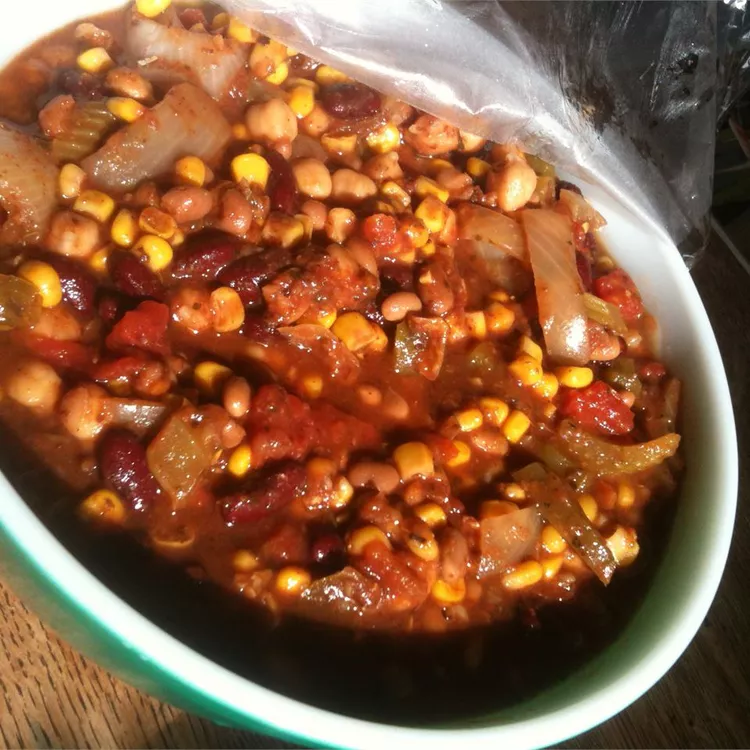

Recipe of Pucherico

Description
When the weather starts to cool, there's no better time to head into the kitchen where you can recreate some of your grandmother's best autumn-inspired dishes. From classic chicken noodle soup to regional specialties, like meat and potato hot dish, these nostalgic dishes are the perfect way to enjoy the fall season. They're sure to warm up both your belly and heart, too.
Ingredients
1 (19 ounce) can black bean soup
1 (15 ounce) can kidney beans, rinsed and drained
1 (15 ounce) can garbanzo beans, rinsed and drained
1 (16 ounce) can vegetarian baked beans
1 (15 ounce) can whole kernel corn, drained
Steps
Combine black bean soup, kidney beans, garbanzo beans, baked beans, tomatoes, corn, onion, bell pepper, and celery. Season with garlic, chili powder, parsley, oregano, and basil.
Cook on High for at least 2 hours.
Eat it